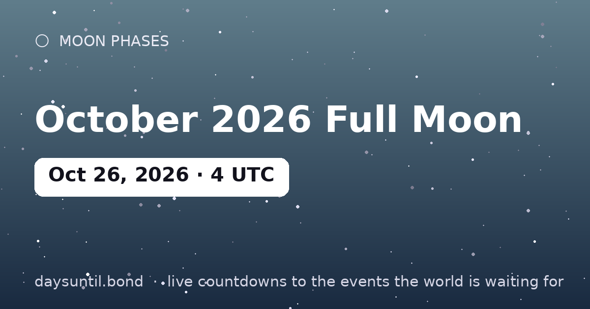

How Many Days Until October 2026 Full Moon?
October 2026 Full Moon falls on Monday, October 26, 2026.
As of October 24, 2026: 2 days to go — 0 weeks and 2 days, 1 weekdays (1 weekend days), about 48 hours.

Quick facts
| Peak (UTC) | October 26, 2026 · 04:13 |
|---|---|
| Zodiac position | 2°45' Taurus |
| Moon phase | Full Moon (100% illumination) |
| Cycle | Lunation ~29.5 days |
About October 2026 Full Moon
The October 2026 full moon peaks at 04:13 UTC on October 26, 2026, at 2°45' Taurus in the tropical zodiac. Full moons always rise at sunset and set at sunrise, so the best viewing is any time the Moon is up that night — no equipment needed.
In astrology, the full moon in Taurus is considered the month's closing chapter: what began at the Taurus new moon six months earlier reaches fullness, and what is no longer working becomes impossible to ignore. Monthly full moons are the sky's built-in review meetings.
How the remaining time breaks down
2 days is the headline, but it is rarely the number that helps. 1 of those are weekdays and 1 fall on a weekend, which is the split that matters if you are planning around work. It is 0 weeks and 2 days, or roughly 0.1 months, or about 48 hours.
| Unit | Until October 2026 Full Moon |
|---|---|
| Days | 2 |
| Weeks | 0 weeks and 2 days |
| Months (approx) | 0.1 |
| Weekdays | 1 |
| Weekend days | 1 |
| Hours | 48 |
| Sleeps | 2 |
Working days are Monday to Friday and do not subtract public holidays, which vary by country and employer — the full month-by-month split is on our weekday page for October 2026 Full Moon.